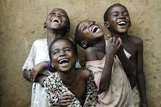

¿Qué es la histeria colectiva?
Histeria colectiva o también denominada histeria en masa, histeria de grupo, psicosis colectiva o
comportamiento obsesivo colectivo es el fenómeno sociopsicológico que comprende la manifestación de los
mismos o similares síntomas histéricos por más de una persona.
La produce la percepción, real o irreal, de una amenaza incontrolada, que genera pánico colectivo. Una
manifestación común de histeria en masa ocurre cuando un grupo de personas cree que está sufriendo una
enfermedad o dolencia similar. Así, el grupo suele mostrar entusiasmo o ansiedad, comportamiento
irracional o síntomas inexplicables de alguna enfermedad.
La principal característica de la histeria colectiva es que la conducta patológica se manifiesta en un
gran número de personas.5 Normalmente, la histeria en masa empieza cuando un individuo cae enfermo o
histérico durante un periodo de estrés.6 Cuando este individuo inicial muestra los síntomas, otros
empiezan a manifestar síntomas similares, generalmente náusea, debilidad muscular, ataques de pánico o
dolores de cabeza.7 A menudo, la visión de milagros religiosos es atribuida a la histeria en masa.3
Hoy en día, se prefiere utilizar el término reacción de estrés colectivo para hablar de fenómenos de
este género.
Epidemia de baile(1518)
Los hechos se iniciaron a mediados de julio de 1518 cuando una mujer comenzó a bailar
fervorosamente en una calle de Estrasburgo.Este hecho se mantuvo por cuatro a seis días. En una
semana se habían unido 34 personas más y en un mes cerca de 400 bailarines. Algunas de estas personas
finalmente murieron de ataques al corazón, derrames cerebrales o agotamiento.
Documentos históricos, incluyendo apuntes de doctores, sermones, crónicas locales y regionales e
incluso notas publicadas por el municipio de Estrasburgo son enfáticas en que las víctimas bailaban.
A medida que la epidemian de baile empeoraba, nobles preocupados con lo acontecido buscaron el consejo
de médicos locales, quienes descartaron causas astrológicas y sobrenaturales, y en su lugar anunciaron
que la epidemia se debía a una enfermedad causada por un aumento en la temperatura de la sangre.
Sin embargo, en vez de prescribir sangrías, las autoridades persuadieron a que la gente continuara
bailando, en parte abriendo dos mercados e incluso construyendo un escenario. Lo anterior debido a que
creían que si las personas bailaban día y noche, se mejorarían. Para incrementar la efectividad de la
cura, incluso contrataron músicos para mantener a los enfermos bailando.Algunos de los bailarines
fueron llevados a capillas, donde buscaron la cura de su enfermedad.
Las teorías modernas incluyen la intoxicación alimentaria por los productos tóxicos y psicoactivos de
los hongos del cornezuelo, que crecen comúnmente en los granos de la familia del trigo (como el centeno
o la cebada). La ergotamina es el principal producto psicoactivo de los hongos del cornezuelo, está
estructuralmente relacionada con el fármaco recreativo dietilamida del ácido lisérgico (LSD-25) y es la
sustancia a partir de la cual se sintetizó originalmente el LSD-25. El mismo hongo también ha sido
implicado en otras grandes anomalías históricas, incluyendo los juicios de Salem.

El mayor ataque de risa de la historia(1962)
La epidemia de risa comenzó el 30 de enero de 1962 en una escuela misionera para niñas en Kashasha.
Empezó con tres muchachas y se expandió caprichosamente por toda la escuela, llegando a afectar a 95 de
las 159 alumnas de entre 12 y 18 años.12 Los síntomas en las afectadas tuvieron una duración que podía
variar desde unas pocas horas hasta un máximo de dieciséis días. El cuerpo docente no se vio afectado,
pero informó que las estudiantes eran incapaces de concentrarse en sus clases. La escuela se vio
obligada a cerrar el 18 de marzo de 1962.
Después de que la escuela cerrara y las alumnas fueran enviadas a sus casas, la epidemia se extendió a
Nshamba, un pueblo que hospedaba a varias de las chicas. En abril y mayo, 217 personas tuvieron ataques
de risa en el pueblo, la mayoría niños en edad escolar y adultos jóvenes. La escuela de Kashasha reabrió
el 21 de mayo pero volvió a cerrar a finales de junio, este mes, la epidemia de risa se propagó a la
escuela media para mujeres de Ramashenye, cerca de Bukoba, donde afectó a 47 muchachas. Otro brote tuvo
lugar en Kanyangereka, y dos escuelas infantiles cercanas fueron cerradas.
Se suele creer que la epidemia de la risa de Tanganica hizo que miles de personas se rieran
continuamente durante meses, sin embargo, podría no haber sido el caso. Otros informes dicen que la
epidemia consistió en ocasionales ataques de risa o llanto entre grupos de personas, que se produjeron
en toda la vecindad de la aldea de Kashasha en intervalos irregulares. De acuerdo con los informes, la
risa y el llanto causaban incapacidad cuando atacaban.
La escuela de la que surgió la "epidemia" se cerró, y los niños y los padres la transmitieron a los
alrededores, otras escuelas, la propia Kashasha, y otro pueblo, integrado por miles de personas, quienes
fueron afectados en cierta medida. Entre seis y dieciocho meses después de su inicio, el fenómeno se
extinguió. Se ha informado de epidemias, con síntomas similares a los de la risa, ocurridas en escala
masiva: dolor, desmayos, problemas respiratorios, erupciones cutáneas, ataques de llanto y gritos
histéricos sin sentido. En total cerraron 14 escuelas y alrededor de mil personas se vieron afectadas.
